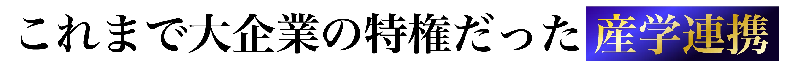

大学などの教育・研究機関と企業が連携し、大学の持つ研究成果や技術、ノウハウを活かして、企業が製品開発や新商品開発、技術力の向上を図る取り組みを産学連携と呼び、近年増加しています。
しかし一方で、そのコストは非常に高く、5年〜10年の時間と数億円の投資が必要な場合も珍しくありません。中小企業や中堅企業が払うコストとして現実的ではありません。
VS

Point
私達は、独自のコネクションで大学との共同研究を通じて、エビデンスの獲得が難しい商材にも、"信頼の証明"を与える仕組みをこれまでの相場よりも比較的安価に提供しています。
大学と連携して開発された製品という事実そのものが、メディア・プレスリリースでの話題性や、企業ブランディング強化にも直結しますし、学術的な裏付けを持つ商品は、ただの"謳ってるだけ"の商品から、ニュース性や信頼性を備えた"語れる商品"へと進化します。
産学連携が広がれば、世の中の良い商品にもっとスポットライトが当たることが可能です。
ぜひあなたの商品やサービスを大学と連携させてみませんか？